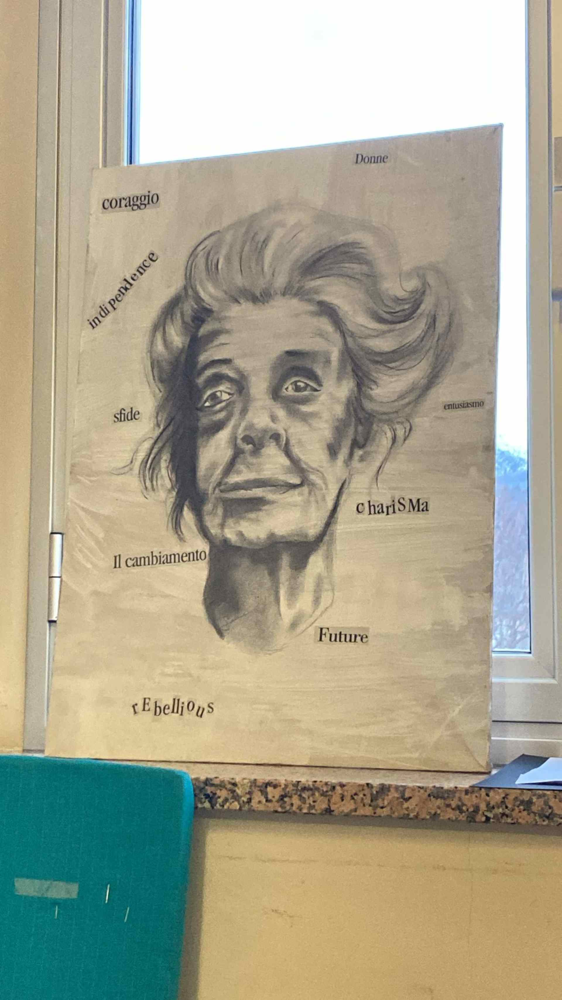

Rita Levi-Montalcini (1909-2012)
Primi anni
Rita Levi-Montalcini è stata una neurologa italiana nata a Torino, Italia. È stata famosa per la sua scoperta del Fattore di Crescita Nervosa (NGF), una sostanza che stimola e influenza la crescita delle cellule nervose. Il suo lavoro le ha valso il Premio Nobel per la Fisiologia nel 1986, che ha condiviso con il biochimico Stanley Cohen.
I suoi studi
Rita Levi-Montalcini è nata il 22 aprile 1909 da genitori ebrei italiani, Adamo Levi e Adele Montalcini. Nonostante suo padre non fosse d'accordo con il suo desiderio di studiare perché pensava che il ruolo di una donna fosse a casa, Rita chiese il permesso a suo padre di studiare medicina e si iscrisse alla facoltà di medicina dell'Università di Torino. Si laureò con il massimo dei voti nel 1936 ma invece di intraprendere una carriera come medico, si interessò alla ricerca condotta da Giuseppe Levi. Rita iniziò degli studi avanzati in neurologia e psicologia ma dovette lasciare l'Italia quando Mussolini pubblicò le Leggi Razziali e rese impossibile per gli non-Ariani avere una carriera professionale o accademica. Trascorse poco tempo in Belgio ma dovette fuggire nuovamente quando la Germania invase il Belgio. Dopo un po' di tempo, Rita tornò a Torino e creò un laboratorio nella sua camera da letto, utilizzando ciò che poteva trovare per fare esperimenti sugli embrioni di pollo e studiare le cellule nervose responsabili del controllo dei movimenti. Poiché Levi-Montalcini era ebrea, non solo non poteva pubblicare i suoi lavori nelle riviste italiane (pubblicava i suoi risultati su riviste straniere) ma doveva anche sfuggire ai tedeschi altre volte fino alla fine della guerra. Ricevette interesse per il suo lavoro dal Professor Viktor Hamburger presso l'Università di Washington e lui le offrì un posto di ricercatore associato ed è qui che fece gran parte del suo lavoro.
Morte e eredità
Levi-Montalcini morì il 30 dicembre 2012 a Roma, Italia, all'età di 103 anni. La sua scoperta ha contribuito enormemente alla comprensione dei problemi medici e il suo lavoro ha fornito agli studiosi di oggi un nuovo modo per comprendere e studiare le malattie.
Rita Levi-Montalcini (1909-2012)
Rita Levi-Montalcini was an Italian neurologist born in Turin, Italy. She was famous for her discovery of Nerve Growth Factor (NGF), a substance that stimulates and influences the growth of nerve cells. Her work earned her the Nobel Prize for Physiology in 1986, which she shared with biochemist Stanley Cohen.
Her Studies
Rita Levi-Montalcini was born on 22 April 1909 to Italian Jewish parents, Adamo Levi and Adele Montalcini. Despite the fact her father did not agree with her desire to study because he thought the role of a woman was at home, Rita asked her father’s permission to study medicine and she entered medical school at the University of Turin. She graduated with summa cum laude, the highest distinction, in 1936 but instead of starting a career as a doctor, she became interested in the research carried out by Giuseppe Levi. Rita started advanced studies in neurology and psychology but she had to leave Italy when Mussolini published the Race Laws and made it impossible for non-Aryans to have a professional or academic career. She spent a short time in Belgium but had to escape again when Germany invaded Belgium. After some time, Rita returned to Turin and created a laboratory in her bedroom, using what she could find to do experiments on chick embryos and study the nerve cells responsible for controlling movement. Because Levi-Montalcini was Jewish, not only could she not publish her work in Italian journals (she published her results in foreign journals) but she also had to escape from the Germans other times until the end of the war. She received interest in her work from Professor Viktor Hamburger at Washington University and he offered her a research associate position and it was here that she did a lot of her work.
Death and legacy
Levi-Montalcini died on 30 December 2012 in Rome, Italy at the age of 103. Her discovery contributed greatly to the understanding of medical problems and her work has given researchers today a new way to understand and study diseases.
Image Gallery

Give your image a caption. People love context.